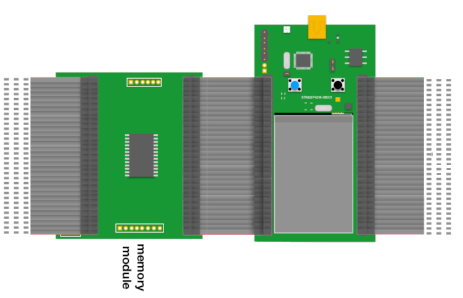

1. Overall description
This library provides C++ functionallity which is used to communicate with different types of memories to test them according to PUF behavior. There exists wrappers for all device specific functions like initialization functions for interfaces like UART or SPI. It is also possible to dynamically add memory modules to the library.

2. Installation
2.1 Run in CLion
- Check this official post about STM32CubeMX projects in CLion (Do not need the OpenOCD + STM32CubeMX plugin).
- Git clone this project.
- Open(file --> Open...) this project in CLion
- Add ocd debug
- Go to Run/Debug Configuration
- Add New OpenOCD Download & Run
- Select Target memory_control_fw.elf
- Select Executable memory_control_fw.elf
- Select Board Config File (stm32f429disc1.cfg in this project)
- Select Download Always
- Select Reset Halt
- Change Cmake options
- Go to File → Settings → Build, Execution, Deployment → Cmake
- Add
-DBoardName="stm32f429" -DBoardClass=STM32F4 -DCPU=cortex-m4 -DFPUType=hard -DFPUSpecification=fpv4-sp-d16 -Dspecs=rdimon.specs
to Cmake options → click Apply and Ok
- Build & Debug (test with flash_leds function in gpio.c file).
 1.9.4
1.9.4